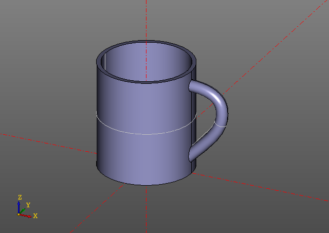

Cup Example
from zencad import *
thikness = 3.5
height = 90
radius = 40
handle_radius = 5
pnts = points([
(-5,-5),
(0,0),
(27,40),
(25,50),
(5,60),
(-5,60),
])
tang = vectors([
(1,1),
(1,1),
(0,0),
(0,0),
(0,0),
(0,0),
])
spine = interpolate(pnts, tang).rotateX(gr(90))
profile = circle(handle_radius).rotateY(gr(45)).translate(pnts[0].x, 0, pnts[0].y)
base = cylinder(r = radius, h = height)
hole = cylinder(r = radius - thikness, h = height - thikness).up(thikness)
handle = pipe(path = spine, profile = profile)
cup = base + handle.right(40).up(17) - hole
display(cup)
show()
